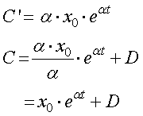
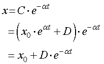
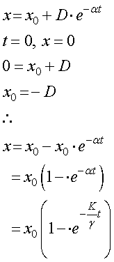
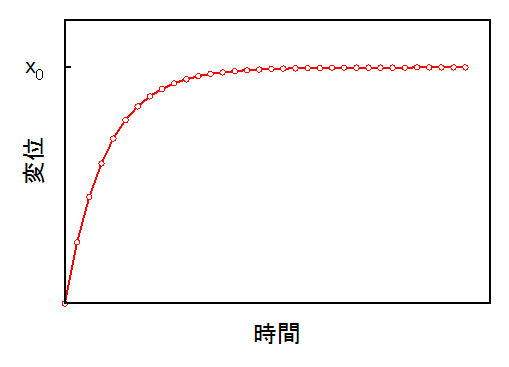

では，C'，を積分しましょう．

となります．D，は今度は定数です． 従って，変位，ｘ，は，

となります． ここで，定数Dを決めるために，初期条件を決めましょう． 単純に，
とすれば，

となります． グラフに書くと，

となり，ある時間遅れを伴って，じょじょに与えた変位，x0，に近づいていくことがわかります． その時定数が，K/γ，となるわけですね．
では次に，矩形波ではなく，正弦波を与えたときの変位を考えましょう．